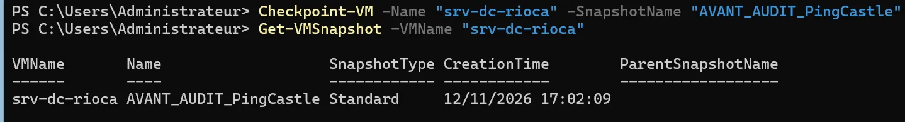
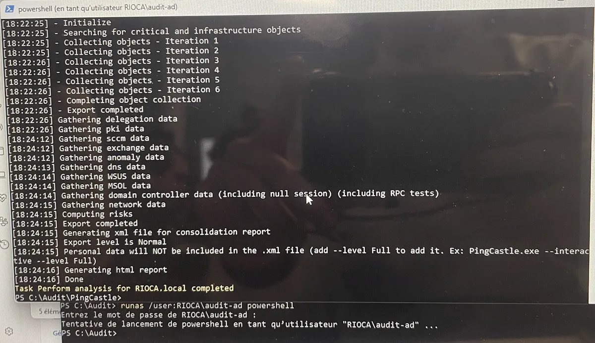
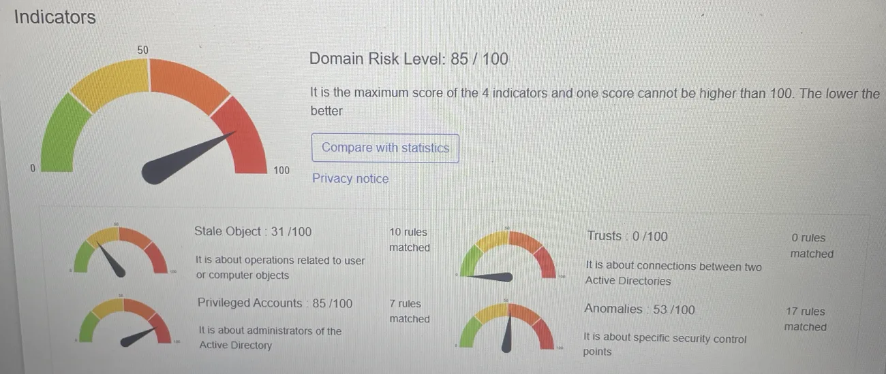

01Cadrer avant d'auditer
Un audit de sécurité ne se lance pas sans accord, même sur une maquette. La règle du projet : rien n'est lancé avant la signature de l'autorisation d'audit par le commanditaire. Ce document fixe ce qui est permis (lire l'annuaire, puis appliquer les corrections une fois le plan validé), les dates des trois séances et la sauvegarde faite avant de commencer.
La fiche périmètre décrit ce qui est audité :
| Élément | Valeur |
|---|---|
| Domaine | RIOCA.local, niveau fonctionnel Windows Server 2025 |
| Contrôleur de domaine | Un seul, srv-ad-rioca, qui porte tous les rôles |
| Comptes | 47 comptes utilisateurs dont 45 actifs, 1 poste client joint |
| Compte d'audit | audit-ad, simple utilisateur du domaine, sans aucun droit d'administration |
| Outil | PingCastle 4.1.2.0, téléchargé depuis le dépôt officiel netwrix/pingcastle sur GitHub |
| Inclus | Le contrôleur et ses services, les objets de l'annuaire (comptes, groupes, ordinateurs, GPO), la configuration de sécurité du domaine, les postes pour les corrections par GPO |
| Exclu | Le réseau de l'établissement (PingCastle n'y est jamais lancé), les switchs, routeurs et pare-feu, les serveurs hors AD, et toute attaque : aucun test d'intrusion |
Le compte d'audit est volontairement un simple utilisateur : c'est ce que verrait un attaquant qui aurait volé le mot de passe de n'importe quel salarié. Avant l'audit, un instantané de la machine virtuelle du contrôleur a été pris, pour pouvoir revenir en arrière.


02L'audit initial
PingCastle a été lancé depuis le poste client, dans une console ouverte avec le compte d'audit :
runas /user:RIOCA\audit-ad powershell
cd C:\Audit\PingCastle
.\PingCastle.exe --healthcheck --server RIOCA.localIl lit l'annuaire et produit un rapport HTML et un fichier XML. Il ne modifie rien et ne lance aucune attaque.


Le résultat :
| Catégorie | Ce qu'elle regarde | Note | Règles |
|---|---|---|---|
| Stale Objects | Les vieux objets et réglages : comptes, protocoles anciens | 31 | 10 |
| Privileged Accounts | Les comptes d'administration | 85 | 7 |
| Trusts | Les liens avec d'autres domaines | 0 | 0 |
| Anomalies | Des points de contrôle précis | 53 | 17 |
| Note globale | 85 / 100 | 34 |
La note va de 0 (parfait) à 100 (très mauvais), et la note globale n'est pas une moyenne : c'est la plus haute des quatre catégories. Ici, ce sont les comptes d'administration qui la fixent. Le niveau de maturité ANSSI est de 1 sur 5, le plus bas : un seul point de niveau 1 suffit, et nos administrateurs avaient un mot de passe qui n'expire jamais.
Le cahier des charges laissait choisir le point de départ : auditer la maquette en l'état, ou la fragiliser d'abord avec un script pour avoir assez de faiblesses à corriger. Avec 85 sur 100, la maquette était déjà assez mauvaise : nous l'avons auditée en l'état.


03Analyse des 34 règles
Sur les 34 règles déclenchées, 18 retirent des points et 16 sont à 0 point (de simples conseils). Pour chacune, notre tableau d'analyse donne :
- le point de contrôle de l'ANSSI quand il existe (vuln1 = très grave, vuln2 = grave…) ;
- la technique d'attaque correspondante dans MITRE ATT&CK ;
- un scénario : comment un attaquant s'en servirait, en une ou deux phrases ;
- le risque, coté avec la matrice vraisemblance × impact du cours.
Les points PingCastle et notre risque ne disent pas la même chose. LLMNR, par exemple, ne coûte aucun point, mais nous l'avons coté élevé : c'est une attaque très simple sur le réseau local. Les risques les plus importants :
| Règle | Risque | Le problème |
|---|---|---|
| P-AdminLogin | Critique | Le compte Administrateur servait tous les jours. Son mot de passe volé, c'est tout le domaine perdu |
| P-ServiceDomainAdmin | Critique | 6 administrateurs avaient un mot de passe qui n'expire jamais : un mot de passe volé reste valable pour toujours. C'est le point ANSSI de niveau 1 |
| S-OldNtlm | Élevé | Le domaine accepte encore NTLMv1, un vieux protocole facile à casser |
| A-LAPS-Not-Installed | Élevé | Le mot de passe de l'administrateur local peut être le même sur tous les postes : un poste piraté ouvre les autres |
| A-MinPwdLen | Élevé | Les mots de passe peuvent faire moins de 8 caractères |
| A-NoGPOLLMNR | Élevé | LLMNR est actif : un attaquant sur le réseau peut répondre à la place d'un serveur et récupérer des empreintes de mots de passe |
04Le plan de remédiation
Objectif fixé par le cahier des charges : faire baisser la note globale d'au moins 30 %, donc à 59 au plus, et corriger tous les points ANSSI de niveau 1 et 2. Comme la note globale est la plus haute des catégories, on commence par les comptes d'administration.
Les règles de travail, écrites avant de toucher à quoi que ce soit :
- un nouvel instantané du contrôleur au début de la séance de corrections ;
- un compte de secours, administrateur du domaine, créé et testé avant de modifier les groupes à privilèges ;
- une correction à la fois : on applique, on teste, on note dans le journal des modifications, puis on passe à la suivante ;
- une GPO séparée pour chaque durcissement : pour revenir en arrière, il suffit de désactiver son lien.
| N° | Priorité | Correction | Règle(s) |
|---|---|---|---|
| 0 | Prérequis | Instantané et compte de secours | — |
| 1 | 1 | Un compte d'administration dédié par personne ; les comptes de tous les jours sortent des Admins du domaine | P-AdminLogin, P-ServiceDomainAdmin |
| 2 | 1 | Plus de mot de passe qui n'expire jamais | P-ServiceDomainAdmin, S-PwdNeverExpires |
| 3 | 1 | Mots de passe de 12 caractères au moins, verrouillage après 10 essais | A-MinPwdLen |
| 4 | 1 | Comptes admin « sensibles, ne peuvent pas être délégués » | P-Delegated |
| 5 | 1 | Comptes admin dans le groupe Utilisateurs protégés | P-ProtectedUsers |
| 6 | 1 | Groupe Administrateurs du schéma vidé | P-SchemaAdmin |
| 7 | 2 | LM et NTLMv1 refusés (GPO) | S-OldNtlm |
| 8 | 2 | Windows LAPS : un mot de passe d'administrateur local unique par poste | A-LAPS-Not-Installed |
| 9 | 2 | LLMNR désactivé (GPO) | A-NoGPOLLMNR |
| 10 | 3 | Stratégie d'audit du contrôleur | A-AuditDC |
| 11 | 3 | Quota de jonction au domaine à 0 | S-ADRegistration |
| 12 | 3 | Corbeille Active Directory activée | P-RecycleBin |
| 13 | 3 | Chemins UNC renforcés pour SYSVOL et NETLOGON | A-HardenedPaths |
| 14 | 3 | Nouveau mot de passe pour un compte au faux changement de mot de passe | A-FakePwdChangeAllUsers |
| 15 | 3 | Sous-réseau du contrôleur déclaré | S-DC-SubnetMissing |
| 16 | 3 | Contrôleur retiré du groupe « Accès compatible pré-Windows 2000 » | A-PreWin2000Other |
Chaque correction du plan a sa méthode (commande ou chemin de la GPO), son test et son retour arrière. Par exemple, pour la correction 2 :
# garder la liste des comptes concernés, pour le retour arrière
Get-ADUser -Filter 'PasswordNeverExpires -eq $true' | Select SamAccountName | Export-Csv C:\Audit\pwdneverexpires.csv
# retirer l'option
Get-ADUser -Filter 'PasswordNeverExpires -eq $true' | Set-ADUser -PasswordNeverExpires $false
# test : la première commande ne doit plus rien renvoyerCertaines corrections touchent nos autres TP, et le plan en tient compte :
- Utilisateurs protégés (5) : ce groupe interdit NTLM. Seuls les comptes d'administration y entrent. Les comptes de tous les jours servent à la connexion filaire en 802.1X (PEAP), qui a besoin de NTLM : ils n'y vont pas.
- NTLMv2 seulement (7) : après la GPO, on vérifie que la connexion filaire en 802.1X (PEAP) marche toujours. Sinon, on désactive le lien de la GPO et on le note.
- Corbeille AD (12) : elle ne peut plus être désactivée une fois activée. Elle n'a pas d'effet négatif, et l'instantané reste le seul retour arrière.
05Risques acceptés
Tout corriger n'est pas toujours possible ni utile. Quatre règles resteront, avec leur justification :
| Règle | Pourquoi on l'accepte |
|---|---|
| A-NotEnoughDC | La maquette n'a qu'un contrôleur de domaine ; en ajouter un demande une autre machine Windows Server, hors des moyens du projet. En entreprise, il en faut au moins deux |
| A-WeakRSARootCert2 | Le certificat de l'autorité interne est en RSA 2048 bits, encore considéré comme sûr. La refaire casserait les certificats déjà déployés par GPO : passage en 4096 bits au renouvellement |
| P-AdminLogin | Le compte Administrateur ne servira plus, mais la règle reste tant que sa dernière connexion a moins de 35 jours. Elle disparaîtra d'elle-même |
| P-ProtectedUsers | Administrateur et le compte de secours restent hors du groupe : ils doivent pouvoir se connecter même si Kerberos tombe en panne. Leur mot de passe est long et gardé sous enveloppe |
Les 16 règles à 0 point ne sont pas corrigées dans ce projet, sauf LLMNR. Elles restent dans le rapport comme pistes pour la suite (règles ASR de Defender, blindage Kerberos, journalisation PowerShell…).
06La suite
Si toutes les corrections passent, nous estimons la note globale à environ 30 sur 100, au lieu de 85 : c'est notre estimation, seul le contre-audit donnera la vraie note. Ce qui reste à faire :
- les corrections, à la séance du 26 novembre, en alternant les rôles : l'un applique, l'autre teste et remplit le journal. J'applique les corrections 0 à 7, dont le passage en NTLMv2 : c'est moi qui ai configuré le serveur RADIUS du 802.1X, je vérifie donc que la connexion filaire en PEAP marche toujours ; mon binôme applique les suivantes ;
- le contre-audit PingCastle, dont je suis chargé, pour comparer avant et après ;
- le rapport final : la synthèse pour la direction, le contexte et la méthode sont pour moi, les fiches constat sont partagées entre nous deux.
Cette page sera complétée avec les résultats.